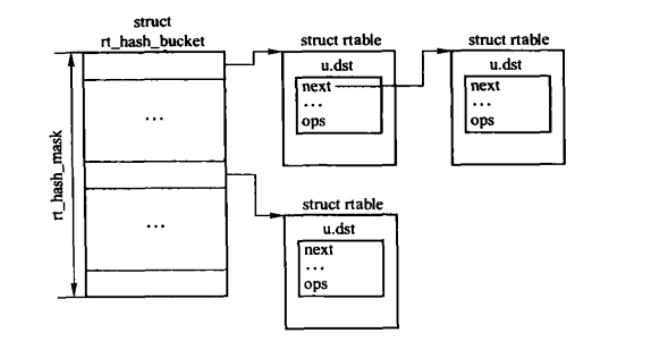
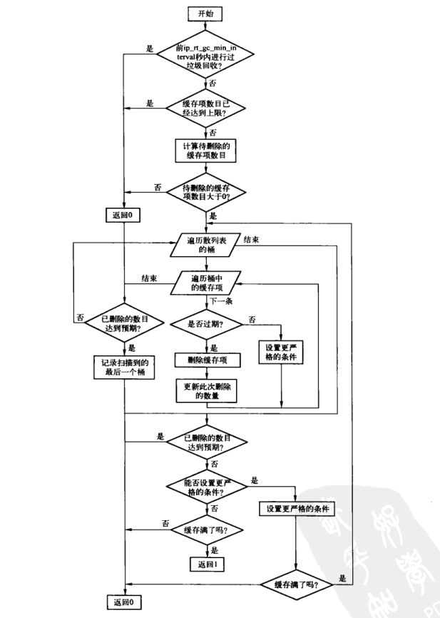

路由表
Table of Contents
路由缓存用于提高路由查找的命中率，减少路由表查找时间。
1 系统参数
- flush 控制路由缓存的刷新。当用户将n写入文件时，会调用 ipv4_sysctl_rtcache_flush()，在n秒后对路由表缓存进行刷新。如果写入一个负数，则内核在默认延迟 min_delay 秒之后进行一个刷新。
- gc_elasticity 添加路由缓存项时，如果路由缓存散列表桶的长度超过此值，则释放最老的缓存项。
- gc_min_interval 和 gc_min_interval_ms 用于控制路由缓存垃圾回收的频率和行为。
- gc_thresh 缓存中的路由条数超过此值时，开始垃圾回收。
- max_delay 用户调度刷新和内核实际刷新缓存之间的最长间隔，默认10s。
- min_delay 用户调度刷新和内核实际刷新缓存之间的最短间隔，默认2s。
- max_size 路由缓存数量的最大值。缓存数量达到该值时，老的路由表项会被清除。
- min_adv_mss 用于初始化路由表项的度量值中的MSS，取设备MTU和该值之间的较大值。
- mtu_expires 缓存在路由缓存项度量值中的PMTU的过期时间。
- min_pmtu 路径MTU发现协议根据此值设置最小的PMTU值。
- secret_interval 定时刷新路由缓存的周期，每隔secret_interval刷新一次。
2 路由缓存的组织结构
路由缓存散列表的类型为 rt_hash_bucket 结构，该结构只包含指向缓存元素链表的指针，缓存项的类型为rtable结构。

Figure 1: 路由缓存结构
dst_entry结构包含了缓存与邻居层的接口、transformers以及路由缓存管理。
2.1 rtable结构
IPv4使用rtable结构存储路由缓存表项。
查看路由缓存的内容：
- /proc/net/rt_cache 文件
- ip route list cache
- route -C
struct rtable { union { struct dst_entry dst; struct rtable *rt_next; //该指针和dst的第一个成员next相同（union结构） } u; struct in_device *idev; //网络设备的IPv4协议族的IP配置块 unsigned rt_flags; //表示路由表项的特性和标志 __u16 rt_type; //路由表项的类型 __u16 rt_multipath_alg; __be32 rt_dst; /* Path destination */ __be32 rt_src; /* Path source */ int rt_iif; //输入网络设备标识 __be32 rt_gateway; //邻居信息 struct flowi fl; //用于搜索缓存的条件组合 /* Miscellaneous cached information */ __be32 rt_spec_dst; /* RFC1122 specific destination */ struct inet_peer *peer; /* 指向与目的地址相关的对端信息块 */ };
2.2 flowi结构
利用flowi数据结构，就可以根据输入网络设备、输出网络设备、三层和思成协议报头中的参数等字段的组合对流量进行分类。 通常被用作路由查找的条件组合。
struct flowi { int oif; //输出网络设备索引 int iif; //输入网络设备索引 __u32 mark; union { struct { __be32 daddr; __be32 saddr; __u8 tos; __u8 scope; } ip4_u; struct { struct in6_addr daddr; struct in6_addr saddr; __be32 flowlabel; } ip6_u; struct { __le16 daddr; __le16 saddr; __u8 scope; } dn_u; } nl_u; #define fld_dst nl_u.dn_u.daddr #define fld_src nl_u.dn_u.saddr #define fld_scope nl_u.dn_u.scope #define fl6_dst nl_u.ip6_u.daddr #define fl6_src nl_u.ip6_u.saddr #define fl6_flowlabel nl_u.ip6_u.flowlabel #define fl4_dst nl_u.ip4_u.daddr #define fl4_src nl_u.ip4_u.saddr #define fl4_tos nl_u.ip4_u.tos #define fl4_scope nl_u.ip4_u.scope __u8 proto; //标识四层协议 __u8 flags; #define FLOWI_FLAG_MULTIPATHOLDROUTE 0x01 union { struct { __be16 sport; __be16 dport; } ports; struct { __u8 type; __u8 code; } icmpt; struct { __le16 sport; __le16 dport; } dnports; __be32 spi; #ifdef CONFIG_IPV6_MIP6 struct { __u8 type; } mht; #endif } uli_u; #define fl_ip_sport uli_u.ports.sport #define fl_ip_dport uli_u.ports.dport #define fl_icmp_type uli_u.icmpt.type #define fl_icmp_code uli_u.icmpt.code #define fl_ipsec_spi uli_u.spi #ifdef CONFIG_IPV6_MIP6 #define fl_mh_type uli_u.mht.type #endif __u32 secid; /* used by xfrm; see secid.txt */ } __attribute__((__aligned__(BITS_PER_LONG/8)));
2.3 dst_entry结构
dst_entry结构被用于存储缓存路由项中独立于协议的信息。三层协议在另外的结构中存储本协议中更多的私有信息（例如：IPv4使用rtable结构）。
struct dst_entry { struct dst_entry *next; //将分布在同一个散列表桶内的dst_entry实例链接在一起 atomic_t __refcnt; /* client references */ int __use; //该表项已经被使用的次数 struct dst_entry *child; struct net_device *dev; //输出网络设备 short error; //fib_loopup()查找失败时，错误码值会被保存在这个字段中。 short obsolete; //用于标识dst_entry实例的可用状态。 int flags; #define DST_HOST 1 #define DST_NOXFRM 2 #define DST_NOPOLICY 4 #define DST_NOHASH 8 #define DST_BALANCED 0x10 unsigned long lastuse; //记录该表项最后一次被使用的时间戳。 unsigned long expires; //该表项的过期时间戳 unsigned short header_len; /* more space at head required */ unsigned short nfheader_len; /* more non-fragment space at head required */ unsigned short trailer_len; /* space to reserve at tail */ u32 metrics[RTAX_MAX]; struct dst_entry *path; unsigned long rate_last; /* rate limiting for ICMP */ unsigned long rate_tokens; struct neighbour *neighbour; struct hh_cache *hh; //缓存的二层首部 struct xfrm_state *xfrm; int (*input)(struct sk_buff*); int (*output)(struct sk_buff*); #ifdef CONFIG_NET_CLS_ROUTE __u32 tclassid; #endif struct dst_ops *ops; struct rcu_head rcu_head; char info[0]; };
2.4 dst_ops结构
dst_ops结构是三层协议与独立于协议的缓存之间的接口。 协议相关的结构（例如rtable）等对这个结构进行了封装。
IP层拥有路由缓存，但其他协议通常保持到这些路由缓存元素的引用，所有这些引用都指向dst_entry，而不是封装该结构的rtable。 SKB缓冲区也能保持到 dst_entry 结构的一个引用， 而不是到rtable结构的引用，这个引用被用于存储路由查找结果。
struct dst_ops { //对应的地址族 unsigned short family; //协议ID __be16 protocol; //指定了路由缓存的容量 unsigned gc_thresh; //垃圾回收函数 int (*gc)(void); struct dst_entry * (*check)(struct dst_entry *, __u32 cookie); //删除dst_entry实例前的清理工作 void (*destroy)(struct dst_entry *); //当一个设备被关闭或者注销时，调用该接口。 void (*ifdown)(struct dst_entry *, struct net_device *dev, int how); //用于检测路由缓存项，当TCP传输超时时，会调用此接口 struct dst_entry * (*negative_advice)(struct dst_entry *); //用于处理目的地址不可达错误。 void (*link_failure)(struct sk_buff *); //更新缓存路由项的PMTU。通常在处理所接收到的ICMP分片需求消息时调用。 void (*update_pmtu)(struct dst_entry *dst, u32 mtu); //三层路由缓存结构的大小 int entry_size; //已经分配的dst_entry实例数目 atomic_t entries; //分配路由缓存元素的内存池 struct kmem_cache *kmem_cachep; };
3 初始化
IPv4路由模块是由ip_rt_init()进行初始化的，该函数在系统启动时，通过IP模块的 ip_init() 接口调用。
int __init ip_rt_init(void) { int rc = 0; //初始化hash随机值 rt_hash_rnd = (int) ((num_physpages ^ (num_physpages>>8)) ^ (jiffies ^ (jiffies >> 7))); #ifdef CONFIG_NET_CLS_ROUTE //路由表的classifier标签相关 { int order; for (order = 0; (PAGE_SIZE << order) < 256 * sizeof(struct ip_rt_acct) * NR_CPUS; order++) /* NOTHING */; ip_rt_acct = (struct ip_rt_acct *)__get_free_pages(GFP_KERNEL, order); if (!ip_rt_acct) panic("IP: failed to allocate ip_rt_acct\n"); memset(ip_rt_acct, 0, PAGE_SIZE << order); } #endif //创建用于分配路由缓存项的缓存内存池 ipv4_dst_ops.kmem_cachep = kmem_cache_create("ip_dst_cache", sizeof(struct rtable), 0, SLAB_HWCACHE_ALIGN|SLAB_PANIC, NULL, NULL); //创建rt_hash_table散列表，用于存储路由缓存项。 rt_hash_table = (struct rt_hash_bucket *) alloc_large_system_hash("IP route cache", sizeof(struct rt_hash_bucket), rhash_entries, (num_physpages >= 128 * 1024) ? 15 : 17, 0, &rt_hash_log, &rt_hash_mask, 0); memset(rt_hash_table, 0, (rt_hash_mask + 1) * sizeof(struct rt_hash_bucket)); rt_hash_lock_init(); //确定垃圾回收算法使用的gc_thresh门限值 ipv4_dst_ops.gc_thresh = (rt_hash_mask + 1); ip_rt_max_size = (rt_hash_mask + 1) * 16; //初始化网络设备IPv4相关的IP编址 devinet_init(); //初始化路由表 ip_fib_init(); //初始化路由缓存的相关定时器 init_timer(&rt_flush_timer); rt_flush_timer.function = rt_run_flush; init_timer(&rt_periodic_timer); rt_periodic_timer.function = rt_check_expire; init_timer(&rt_secret_timer); rt_secret_timer.function = rt_secret_rebuild; /* All the timers, started at system startup tend to synchronize. Perturb it a bit. */ rt_periodic_timer.expires = jiffies + net_random() % ip_rt_gc_interval + ip_rt_gc_interval; add_timer(&rt_periodic_timer); rt_secret_timer.expires = jiffies + net_random() % ip_rt_secret_interval + ip_rt_secret_interval; add_timer(&rt_secret_timer); #ifdef CONFIG_PROC_FS { struct proc_dir_entry *rtstat_pde = NULL; /* keep gcc happy */ if (!proc_net_fops_create("rt_cache", S_IRUGO, &rt_cache_seq_fops) || !(rtstat_pde = create_proc_entry("rt_cache", S_IRUGO, proc_net_stat))) { return -ENOMEM; } rtstat_pde->proc_fops = &rt_cpu_seq_fops; } #ifdef CONFIG_NET_CLS_ROUTE create_proc_read_entry("rt_acct", 0, proc_net, ip_rt_acct_read, NULL); #endif #endif #ifdef CONFIG_XFRM xfrm_init(); xfrm4_init(); #endif return rc; }
4 创建路由缓存项
输入的报文通常调用 ip_route_input() 在路由缓存中查找路由，当缓存查找没有匹配路由时，将调用 ip_route_input_slow() 在路由表查找路由，命中后再添加路由缓存。
dst_alloc() 为新缓存分配空间，并对缓存项的一些字段初始化。
4.1 创建输入路由缓存项
__mkroute_input 用来创建输入路由缓存项，但仅限于创建进行转发的路由缓存项。
static inline int __mkroute_input(struct sk_buff *skb, struct fib_result* res,//路由表查找到的信息 struct in_device *in_dev, //输入网络设备 __be32 daddr, __be32 saddr, u32 tos, struct rtable **result) //返回成功创建的路由缓存项 { struct rtable *rth; int err; struct in_device *out_dev; unsigned flags = 0; __be32 spec_dst; u32 itag; /* 获取报文的输出网络设备 */ out_dev = in_dev_get(FIB_RES_DEV(*res)); if (out_dev == NULL) { if (net_ratelimit()) printk(KERN_CRIT "Bug in ip_route_input" \ "_slow(). Please, report\n"); return -EINVAL; } //检测源地址的有效性 err = fib_validate_source(saddr, daddr, tos, FIB_RES_OIF(*res), in_dev->dev, &spec_dst, &itag); if (err < 0) { ip_handle_martian_source(in_dev->dev, in_dev, skb, daddr, saddr); err = -EINVAL; goto cleanup; } if (err) flags |= RTCF_DIRECTSRC; //如果不是最优路由，则添加 RTCF_DOREDIRECT 标志。 if (out_dev == in_dev && err && !(flags & (RTCF_NAT | RTCF_MASQ)) && (IN_DEV_SHARED_MEDIA(out_dev) || inet_addr_onlink(out_dev, saddr, FIB_RES_GW(*res)))) flags |= RTCF_DOREDIRECT; if (skb->protocol != htons(ETH_P_IP)) {//是代理ARP /* Not IP (i.e. ARP). Do not create route, if it is * invalid for proxy arp. DNAT routes are always valid. */ if (out_dev == in_dev && !(flags & RTCF_DNAT)) { err = -EINVAL; goto cleanup; } } //为路由缓存项分配内存，并设置相关的值。 rth = dst_alloc(&ipv4_dst_ops); if (!rth) { err = -ENOBUFS; goto cleanup; } atomic_set(&rth->u.dst.__refcnt, 1); rth->u.dst.flags= DST_HOST; #ifdef CONFIG_IP_ROUTE_MULTIPATH_CACHED if (res->fi->fib_nhs > 1) rth->u.dst.flags |= DST_BALANCED; #endif if (in_dev->cnf.no_policy) rth->u.dst.flags |= DST_NOPOLICY; if (out_dev->cnf.no_xfrm) rth->u.dst.flags |= DST_NOXFRM; rth->fl.fl4_dst = daddr; rth->rt_dst = daddr; rth->fl.fl4_tos = tos; rth->fl.mark = skb->mark; rth->fl.fl4_src = saddr; rth->rt_src = saddr; rth->rt_gateway = daddr; rth->rt_iif = rth->fl.iif = in_dev->dev->ifindex; rth->u.dst.dev = (out_dev)->dev; dev_hold(rth->u.dst.dev); rth->idev = in_dev_get(rth->u.dst.dev); rth->fl.oif = 0; rth->rt_spec_dst= spec_dst; //设置缓存项的输入输出函数 rth->u.dst.input = ip_forward; rth->u.dst.output = ip_output; rt_set_nexthop(rth, res, itag); rth->rt_flags = flags; *result = rth; err = 0; cleanup: /* release the working reference to the output device */ in_dev_put(out_dev); return err; }
4.2 创建输出路由缓存项
__mkroute_output()用来创建输出路由缓存项。
static inline int __mkroute_output(struct rtable **result, //用于返回成功创建输出路由缓存项 struct fib_result* res, //路由表查到的信息 const struct flowi *fl, //基于oldflp修改后的条件组合 const struct flowi *oldflp, //查询路由的条件组合 struct net_device *dev_out, //输出网络设备 unsigned flags) //待创建路由缓存项的特性和标志 { struct rtable *rth; struct in_device *in_dev; u32 tos = RT_FL_TOS(oldflp); int err = 0; //回环地址，则输出网络设备也必须是回环设备。 if (LOOPBACK(fl->fl4_src) && !(dev_out->flags&IFF_LOOPBACK)) return -EINVAL; //根据目的地址，设置路由缓存项的类型 if (fl->fl4_dst == htonl(0xFFFFFFFF)) res->type = RTN_BROADCAST; else if (MULTICAST(fl->fl4_dst)) res->type = RTN_MULTICAST; else if (BADCLASS(fl->fl4_dst) || ZERONET(fl->fl4_dst)) return -EINVAL; //输出设备是回环设备，则路由缓存项的目的地址是一个本地地址 if (dev_out->flags & IFF_LOOPBACK) flags |= RTCF_LOCAL; /* 获取输出网络设备的IP配置块 */ in_dev = in_dev_get(dev_out); if (!in_dev) return -EINVAL; if (res->type == RTN_BROADCAST) { //路由项是广播类型 flags |= RTCF_BROADCAST | RTCF_LOCAL; if (res->fi) { fib_info_put(res->fi); res->fi = NULL; } } else if (res->type == RTN_MULTICAST) { //路由项是多播类型 flags |= RTCF_MULTICAST|RTCF_LOCAL; if (!ip_check_mc(in_dev, oldflp->fl4_dst, oldflp->fl4_src, oldflp->proto)) flags &= ~RTCF_LOCAL; /* If multicast route do not exist use default one, but do not gateway in this case. Yes, it is hack. */ if (res->fi && res->prefixlen < 4) { fib_info_put(res->fi); res->fi = NULL; } } //为路由缓存项分配内存 rth = dst_alloc(&ipv4_dst_ops); if (!rth) { err = -ENOBUFS; goto cleanup; } atomic_set(&rth->u.dst.__refcnt, 1); rth->u.dst.flags= DST_HOST; #ifdef CONFIG_IP_ROUTE_MULTIPATH_CACHED if (res->fi) { rth->rt_multipath_alg = res->fi->fib_mp_alg; if (res->fi->fib_nhs > 1) rth->u.dst.flags |= DST_BALANCED; } #endif if (in_dev->cnf.no_xfrm) rth->u.dst.flags |= DST_NOXFRM; if (in_dev->cnf.no_policy) rth->u.dst.flags |= DST_NOPOLICY; rth->fl.fl4_dst = oldflp->fl4_dst; rth->fl.fl4_tos = tos; rth->fl.fl4_src = oldflp->fl4_src; rth->fl.oif = oldflp->oif; rth->fl.mark = oldflp->mark; rth->rt_dst = fl->fl4_dst; rth->rt_src = fl->fl4_src; rth->rt_iif = oldflp->oif ? : dev_out->ifindex; /* get references to the devices that are to be hold by the routing cache entry */ rth->u.dst.dev = dev_out; dev_hold(dev_out); rth->idev = in_dev_get(dev_out); rth->rt_gateway = fl->fl4_dst; rth->rt_spec_dst= fl->fl4_src; rth->u.dst.output=ip_output; RT_CACHE_STAT_INC(out_slow_tot); //根据flags,设置输出缓存项的output函数 if (flags & RTCF_LOCAL) { rth->u.dst.input = ip_local_deliver; rth->rt_spec_dst = fl->fl4_dst; } if (flags & (RTCF_BROADCAST | RTCF_MULTICAST)) { rth->rt_spec_dst = fl->fl4_src; if (flags & RTCF_LOCAL && !(dev_out->flags & IFF_LOOPBACK)) { rth->u.dst.output = ip_mc_output; RT_CACHE_STAT_INC(out_slow_mc); } #ifdef CONFIG_IP_MROUTE if (res->type == RTN_MULTICAST) { if (IN_DEV_MFORWARD(in_dev) && !LOCAL_MCAST(oldflp->fl4_dst)) { rth->u.dst.input = ip_mr_input; rth->u.dst.output = ip_mc_output; } } #endif } rt_set_nexthop(rth, res, 0); rth->rt_flags = flags; *result = rth; cleanup: /* release work reference to inet device */ in_dev_put(in_dev); return err; }
5 添加路由表项到缓存中：rt_intern_hash()
在为输入报文或者输出报文选择路由时，如果缓存查找失败，则会查找路由表并将表项保存到路由缓存内。 通过dst_alloc()分配新的缓存项后,根据路由表查找结果来初始化该表项的一些字段，最终会调用rt_intern_hash()将这个新表项插入到缓存散列表的桶连表首部。 在接收到ICMP重定向消息时，也会调用这个函数。
static int rt_intern_hash(unsigned hash, struct rtable *rt, struct rtable **rp) { struct rtable *rth, **rthp; unsigned long now; struct rtable *cand, **candp; u32 min_score; int chain_length; int attempts = !in_softirq(); restart: chain_length = 0; min_score = ~(u32)0; cand = NULL; candp = NULL; now = jiffies; rthp = &rt_hash_table[hash].chain; //获取该hash值上的路由缓存链表 spin_lock_bh(rt_hash_lock_addr(hash)); while ((rth = *rthp) != NULL) { //遍历缓存链表，确定是否已经存在相同项 #ifdef CONFIG_IP_ROUTE_MULTIPATH_CACHED if (!(rth->u.dst.flags & DST_BALANCED) && compare_keys(&rth->fl, &rt->fl)) { #else if (compare_keys(&rth->fl, &rt->fl)) { //查找成功，则不需要添加，更新路由缓存被访问的最后时间，并移动到链表首部 #endif /* Put it first */ *rthp = rth->u.rt_next; /* * Since lookup is lockfree, the deletion * must be visible to another weakly ordered CPU before * the insertion at the start of the hash chain. */ rcu_assign_pointer(rth->u.rt_next, rt_hash_table[hash].chain); /* * Since lookup is lockfree, the update writes * must be ordered for consistency on SMP. */ rcu_assign_pointer(rt_hash_table[hash].chain, rth); rth->u.dst.__use++; dst_hold(&rth->u.dst); rth->u.dst.lastuse = now; spin_unlock_bh(rt_hash_lock_addr(hash)); rt_drop(rt); *rp = rth; return 0; } if (!atomic_read(&rth->u.dst.__refcnt)) { u32 score = rt_score(rth); if (score <= min_score) { cand = rth; candp = rthp; min_score = score; } } chain_length++; rthp = &rth->u.rt_next; } if (cand) { /* ip_rt_gc_elasticity used to be average length of chain * length, when exceeded gc becomes really aggressive. * * The second limit is less certain. At the moment it allows * only 2 entries per bucket. We will see. */ if (chain_length > ip_rt_gc_elasticity) { *candp = cand->u.rt_next; rt_free(cand); } } /* Try to bind route to arp only if it is output route or unicast forwarding path. */ //单播转发报文或者本地生成的报文，需要ARP解析下一跳的二层地址 if (rt->rt_type == RTN_UNICAST || rt->fl.iif == 0) { int err = arp_bind_neighbour(&rt->u.dst);//绑定路由缓存项和邻居项 if (err) { spin_unlock_bh(rt_hash_lock_addr(hash)); if (err != -ENOBUFS) { rt_drop(rt); return err; } /* Neighbour tables are full and nothing can be released. Try to shrink route cache, it is most likely it holds some neighbour records. */ if (attempts-- > 0) { int saved_elasticity = ip_rt_gc_elasticity; int saved_int = ip_rt_gc_min_interval; ip_rt_gc_elasticity = 1; ip_rt_gc_min_interval = 0; rt_garbage_collect(); ip_rt_gc_min_interval = saved_int; ip_rt_gc_elasticity = saved_elasticity; goto restart; } if (net_ratelimit()) printk(KERN_WARNING "Neighbour table overflow.\n"); rt_drop(rt); return -ENOBUFS; } } //添加到路由缓存散列表 rt->u.rt_next = rt_hash_table[hash].chain; #if RT_CACHE_DEBUG >= 2 if (rt->u.rt_next) { struct rtable *trt; printk(KERN_DEBUG "rt_cache @%02x: %u.%u.%u.%u", hash, NIPQUAD(rt->rt_dst)); for (trt = rt->u.rt_next; trt; trt = trt->u.rt_next) printk(" . %u.%u.%u.%u", NIPQUAD(trt->rt_dst)); printk("\n"); } #endif rt_hash_table[hash].chain = rt; spin_unlock_bh(rt_hash_lock_addr(hash)); *rp = rt; return 0; }
6 输入路由缓存查询： ip_route_input()
此函数用于输入报文的路由缓存查询。
int ip_route_input(struct sk_buff *skb, __be32 daddr, __be32 saddr, u8 tos, struct net_device *dev) { struct rtable * rth; unsigned hash; int iif = dev->ifindex; tos &= IPTOS_RT_MASK; hash = rt_hash(daddr, saddr, iif);//计算散列表的桶链表下标 rcu_read_lock(); for (rth = rcu_dereference(rt_hash_table[hash].chain); rth; //遍历散列表桶链表 rth = rcu_dereference(rth->u.rt_next)) { if (rth->fl.fl4_dst == daddr && rth->fl.fl4_src == saddr && rth->fl.iif == iif && rth->fl.oif == 0 && rth->fl.mark == skb->mark && rth->fl.fl4_tos == tos) { rth->u.dst.lastuse = jiffies; dst_hold(&rth->u.dst); rth->u.dst.__use++; RT_CACHE_STAT_INC(in_hit); rcu_read_unlock(); skb->dst = (struct dst_entry*)rth; return 0; } RT_CACHE_STAT_INC(in_hlist_search); } rcu_read_unlock(); /* Multicast recognition logic is moved from route cache to here. The problem was that too many Ethernet cards have broken/missing hardware multicast filters :-( As result the host on multicasting network acquires a lot of useless route cache entries, sort of SDR messages from all the world. Now we try to get rid of them. Really, provided software IP multicast filter is organized reasonably (at least, hashed), it does not result in a slowdown comparing with route cache reject entries. Note, that multicast routers are not affected, because route cache entry is created eventually. */ if (MULTICAST(daddr)) { //为多播报文，且查找失败 struct in_device *in_dev; rcu_read_lock(); if ((in_dev = __in_dev_get_rcu(dev)) != NULL) { //检测目的地址是否为本地配置的多播地址 int our = ip_check_mc(in_dev, daddr, saddr, skb->nh.iph->protocol); if (our #ifdef CONFIG_IP_MROUTE || (!LOCAL_MCAST(daddr) && IN_DEV_MFORWARD(in_dev)) //目的地址不是本地地址，且支持多播转发 #endif ) { rcu_read_unlock(); //多播处理 return ip_route_input_mc(skb, daddr, saddr, tos, dev, our); } } rcu_read_unlock(); return -EINVAL; } //查找路由表 return ip_route_input_slow(skb, daddr, saddr, tos, dev); }
7 输出路由缓存查询
本地生成的报文输出时会调用 ip_route_output_flow() 或者 ip_route_output_key() 进行路由查询。
EXPORT_SYMBOL_GPL(__ip_route_output_key); int ip_route_output_flow(struct rtable **rp, struct flowi *flp, struct sock *sk, int flags) { int err; if ((err = __ip_route_output_key(rp, flp)) != 0) return err; //ipsec相关的处理 if (flp->proto) { if (!flp->fl4_src) flp->fl4_src = (*rp)->rt_src; if (!flp->fl4_dst) flp->fl4_dst = (*rp)->rt_dst; return xfrm_lookup((struct dst_entry **)rp, flp, sk, flags); } return 0; } EXPORT_SYMBOL_GPL(ip_route_output_flow); int ip_route_output_key(struct rtable **rp, struct flowi *flp) { return ip_route_output_flow(rp, flp, NULL, 0); }
__ip_route_output_key() 在路由缓存中查找缓存项。
int __ip_route_output_key(struct rtable **rp, //查找成功时，保存对应的缓存项 const struct flowi *flp) //搜索路由的条件组合 { unsigned hash; struct rtable *rth; hash = rt_hash(flp->fl4_dst, flp->fl4_src, flp->oif); rcu_read_lock_bh(); for (rth = rcu_dereference(rt_hash_table[hash].chain); rth; rth = rcu_dereference(rth->u.rt_next)) { //匹配缓存项 if (rth->fl.fl4_dst == flp->fl4_dst && rth->fl.fl4_src == flp->fl4_src && rth->fl.iif == 0 && rth->fl.oif == flp->oif && rth->fl.mark == flp->mark && !((rth->fl.fl4_tos ^ flp->fl4_tos) & (IPTOS_RT_MASK | RTO_ONLINK))) { /* check for multipath routes and choose one if * necessary */ if (multipath_select_route(flp, rth, rp)) { dst_hold(&(*rp)->u.dst); RT_CACHE_STAT_INC(out_hit); rcu_read_unlock_bh(); return 0; } rth->u.dst.lastuse = jiffies; dst_hold(&rth->u.dst); rth->u.dst.__use++; RT_CACHE_STAT_INC(out_hit); rcu_read_unlock_bh(); *rp = rth; return 0; } RT_CACHE_STAT_INC(out_hlist_search); } rcu_read_unlock_bh(); //缓存查找失败，则调用ip_route_output_slow查找路由表 return ip_route_output_slow(rp, flp); } EXPORT_SYMBOL_GPL(__ip_route_output_key);
8 垃圾回收
路由缓存项的回收分为同步和异步回收。
8.1 路由缓存项的过期
通常路由缓存项不会过期，只有发生以下事件时，会调用dst_set_expires()设置dst_entry的过期时间戳字段 expires :
- 接收到ICMP的 UNREACHABLE 或者 FRAGMENTATION NEEDED 消息时，相关的路由项的PMTU必须被更新为ICMP头中指定的MTU。 ICMP模块调用 ip_rt_frag_needed() 更新路由缓存。
- 当TCP代码使用路径MTU发现算法来更新一条路由的MTU时，调用ip_rt_update_pmtu()，其中会调用 dst_set_expires()。
- 当目的IP地址被认为不可达时，通过直接或者间接调用 dst_ops 数据结构中的 link_failure 方法，将缓存内相关的 dst_entry 结构标记为不可达。 IPv4中是 ipv4_link_failure() 函数。
8.2 判断缓存路由表项是否可以删除
同步和异步回收，都使用 rt_may_expire() 函数判断是否符合删除条件。
static int rt_may_expire(struct rtable *rth, unsigned long tmo1, unsigned long tmo2) { unsigned long age; int ret = 0; if (atomic_read(&rth->u.dst.__refcnt)) goto out; ret = 1; if (rth->u.dst.expires && time_after_eq(jiffies, rth->u.dst.expires)) goto out; age = jiffies - rth->u.dst.lastuse; ret = 0; if ((age <= tmo1 && !rt_fast_clean(rth)) || (age <= tmo2 && rt_valuable(rth))) goto out; ret = 1; out: return ret; }
8.3 同步清理
路由缓存的同步清理函数： rt_garbage_collect()。
- 当在添加新表项到路由缓存的 rt_intern_hash() 中时，如果绑定邻居项出错，会调用 rt_garbage_collect() 函数清理。
- 分配表项调用 dst_alloc() 时，如果表项总数超过门限值 gc_thresh， 则调用 rt_garbage_collect() 函数清理。

Figure 2: rt_garbage_collect()流程
/* Short description of GC goals. We want to build algorithm, which will keep routing cache at some equilibrium point, when number of aged off entries is kept approximately equal to newly generated ones. Current expiration strength is variable "expire". We try to adjust it dynamically, so that if networking is idle expires is large enough to keep enough of warm entries, and when load increases it reduces to limit cache size. */ static int rt_garbage_collect(void) { static unsigned long expire = RT_GC_TIMEOUT; //判断路由项是否过期的超时条件 static unsigned long last_gc; //用于记录每次垃圾回收的时间 static int rover; //记录上次垃圾回收时扫描的最后一个桶 static int equilibrium; struct rtable *rth, **rthp; unsigned long now = jiffies; int goal; /* 垃圾回收比较耗费CPU时间，所以回收不应该太频繁 */ RT_CACHE_STAT_INC(gc_total); if (now - last_gc < ip_rt_gc_min_interval && //距离上次垃圾回收的间隔小于ip_rt_gc_min_interval atomic_read(&ipv4_dst_ops.entries) < ip_rt_max_size) { //并且缓存项数目还没有达到上限 ip_rt_max_size RT_CACHE_STAT_INC(gc_ignored); goto out; } //计算待删除的缓存项数目和剩余的数目 goal = atomic_read(&ipv4_dst_ops.entries) - (ip_rt_gc_elasticity << rt_hash_log); if (goal <= 0) { if (equilibrium < ipv4_dst_ops.gc_thresh) equilibrium = ipv4_dst_ops.gc_thresh; goal = atomic_read(&ipv4_dst_ops.entries) - equilibrium; if (goal > 0) { equilibrium += min_t(unsigned int, goal / 2, rt_hash_mask + 1); goal = atomic_read(&ipv4_dst_ops.entries) - equilibrium; } } else { /* We are in dangerous area. Try to reduce cache really * aggressively. */ goal = max_t(unsigned int, goal / 2, rt_hash_mask + 1); equilibrium = atomic_read(&ipv4_dst_ops.entries) - goal; } if (now - last_gc >= ip_rt_gc_min_interval) last_gc = now; //记录垃圾回收时间 if (goal <= 0) { //不存在待删除的缓存项 equilibrium += goal; goto work_done; } //开始遍历散列表 do { int i, k; for (i = rt_hash_mask, k = rover; i >= 0; i--) { unsigned long tmo = expire; k = (k + 1) & rt_hash_mask; rthp = &rt_hash_table[k].chain; spin_lock_bh(rt_hash_lock_addr(k)); while ((rth = *rthp) != NULL) { //遍历hash 桶链表 //检测缓存项是否过期 if (!rt_may_expire(rth, tmo, expire)) { tmo >>= 1; rthp = &rth->u.rt_next; continue; } //过期则进行删除操作 *rthp = rth->u.rt_next; rt_free(rth); goal--; } spin_unlock_bh(rt_hash_lock_addr(k)); if (goal <= 0) break; } rover = k; if (goal <= 0) //是否达到待删除的目标数量 goto work_done; /* 还没有达到删除目标. 如果有以下情况则停止处理: - 过期时间减小为0，否则减半 - 缓存项数量小于上限 - 由中断引发的调用 - */ RT_CACHE_STAT_INC(gc_goal_miss); if (expire == 0) break; expire >>= 1; printk(KERN_DEBUG "expire>> %u %d %d %d\n", expire, atomic_read(&ipv4_dst_ops.entries), goal, i); if (atomic_read(&ipv4_dst_ops.entries) < ip_rt_max_size) goto out; } while (!in_softirq() && time_before_eq(jiffies, now)); //缓存项的数目小于上限 if (atomic_read(&ipv4_dst_ops.entries) < ip_rt_max_size) goto out; if (net_ratelimit()) printk(KERN_WARNING "dst cache overflow\n"); RT_CACHE_STAT_INC(gc_dst_overflow); return 1; work_done: //完成垃圾而回收后，需要调整expire expire += ip_rt_gc_min_interval; if (expire > ip_rt_gc_timeout || atomic_read(&ipv4_dst_ops.entries) < ipv4_dst_ops.gc_thresh) expire = ip_rt_gc_timeout; #if RT_CACHE_DEBUG >= 2 printk(KERN_DEBUG "expire++ %u %d %d %d\n", expire, atomic_read(&ipv4_dst_ops.entries), goal, rover); #endif out: return 0; }
8.4 异步清理
rt_periodic_timer 函数用来周期性的进行垃圾回收工作，其处理函数为 rt_check_expire()。
定时器的默认间隔为 ip_rt_gc_interval 秒，为了防止不同内核模块在同一时间到期， ip_rt_init 函数中设置定时器的第一次过期时间为 ip_rt_gc_interval和 2*ip_rt_gc_interval 之间的一个随机值。
/* This runs via a timer and thus is always in BH context. */ static void rt_check_expire(unsigned long dummy) { static unsigned int rover; unsigned int i = rover, goal; //获取上次回收扫描的最后一个桶 struct rtable *rth, **rthp; unsigned long now = jiffies; u64 mult; //计算待删除的缓存项数目 mult = ((u64)ip_rt_gc_interval) << rt_hash_log; if (ip_rt_gc_timeout > 1) do_div(mult, ip_rt_gc_timeout); goal = (unsigned int)mult; if (goal > rt_hash_mask) goal = rt_hash_mask + 1; for (; goal > 0; goal--) { unsigned long tmo = ip_rt_gc_timeout; i = (i + 1) & rt_hash_mask; rthp = &rt_hash_table[i].chain; //开始遍历桶链表 if (*rthp == 0) continue; spin_lock(rt_hash_lock_addr(i)); while ((rth = *rthp) != NULL) { if (rth->u.dst.expires) {//已经过期 /* Entry is expired even if it is in use */ if (time_before_eq(now, rth->u.dst.expires)) { tmo >>= 1; rthp = &rth->u.rt_next; continue; } } else if (!rt_may_expire(rth, tmo, ip_rt_gc_timeout)) { //检测是否过期 tmo >>= 1; rthp = &rth->u.rt_next; continue; } //删除过期项 *rthp = rth->u.rt_next; rt_free(rth); } spin_unlock(rt_hash_lock_addr(i)); /* Fallback loop breaker. */ if (time_after(jiffies, now)) break; } rover = i; //记录本次扫描的桶 //设置下次超时时间 mod_timer(&rt_periodic_timer, jiffies + ip_rt_gc_interval); }
8.5 路由缓存项的释放
在进行垃圾回收时，并不会直接释放缓存项，而是将其插入到 dst_garbage_list 链表。当dst_gc_timer定时器到期时，调用定时器处理函数 dst_run_gc() 。
9 刷新缓存
当系统中发生某种变化时，使得缓存中的一些信息过期，内核就会刷新路由缓存。
在许多情况下，即使只有一条表项过期，但内核为简化操作，会清空所有表项。
在进行写请求时，会调用 rt_cache_flush() 来刷新缓存，该函数根据输入参数 delay 来决定是立即刷新还是启动定时器刷新。
void rt_cache_flush(int delay) { unsigned long now = jiffies; int user_mode = !in_softirq(); if (delay < 0) //使用ip_rt_min_delay执行的时间延迟刷新 delay = ip_rt_min_delay; /* 刷新多路径路由实例的状态*/ multipath_flush(); spin_lock_bh(&rt_flush_lock); //新提交一个延迟刷新请求，需要先删除旧的刷新请求 if (del_timer(&rt_flush_timer) && delay > 0 && rt_deadline) { //rt_deadline用来保证新请求的过期时间不能迟于上次请求之后的ip_rt_max_delay秒之后 long tmo = (long)(rt_deadline - now); if (user_mode && tmo < ip_rt_max_delay-ip_rt_min_delay) tmo = 0; if (delay > tmo) delay = tmo; } if (delay <= 0) { //立即刷新 spin_unlock_bh(&rt_flush_lock); rt_run_flush(0); return; } if (rt_deadline == 0) rt_deadline = now + ip_rt_max_delay; mod_timer(&rt_flush_timer, now+delay); spin_unlock_bh(&rt_flush_lock); }
9.0.1 定时器刷新
rt_secret_timer定时器每隔secret_interval秒进行刷新，定时器的处理函数为 rt_secret_rebuild()。
9.0.2 网络设备硬件地址改变时的刷新
网络设备硬件地址变化时，ARP模块会收到通知，进而调用 arp_netdev_notifier 来处理。
9.0.3 网络设备状态发生变化
网络设备状态变化或者某些配置变化时，路由子系统会收到通知，调用 fib_netdev_event() 进行处理，比如 NETDEV_UNREGISTER、NETDEV_DOWN、NETDEV_UP、NETDEV_CHANGEMTU、NETDEV_CHANGE等事件。
9.0.4 给设备添加或删除IP地址
当删除地址时，相关的路由项也会被删除。
9.0.5 全局转发状态或者设备转发状态发生变化
例如当禁止转发时，就需要删除转发流量的路由缓存项。
9.0.6 路由项被删除
相关的路由缓存也需要删除
9.0.7 写 /proc 下的 flush 文件
对flush文件写入时，会调用 ipv4_sysctl_rtcache_flush()，最终调用rt_cache_flush()进行刷新。
10 ICMP重定向消息的处理
ip_rt_redirect() 函数用来处理输入的ICMP重定向消息。
void ip_rt_redirect(__be32 old_gw, //发送该ICMP重定向消息的路由器地址 __be32 daddr, //该ICMP重定向消息的目的地址 __be32 new_gw, //优选路由器的IP地址 __be32 saddr, //引发该ICMP消息的原IP数据报的源地址 struct net_device *dev) //该消息的输入设备 { int i, k; struct in_device *in_dev = in_dev_get(dev); struct rtable *rth, **rthp; __be32 skeys[2] = { saddr, 0 }; int ikeys[2] = { dev->ifindex, 0 }; struct netevent_redirect netevent; if (!in_dev) //IP配置块 return; //符合以下条件则拒绝接受该ICMP重定向消息 if (new_gw == old_gw || !IN_DEV_RX_REDIRECTS(in_dev) || MULTICAST(new_gw) || BADCLASS(new_gw) || ZERONET(new_gw)) goto reject_redirect; if (!IN_DEV_SHARED_MEDIA(in_dev)) { if (!inet_addr_onlink(in_dev, new_gw, old_gw)) goto reject_redirect; if (IN_DEV_SEC_REDIRECTS(in_dev) && ip_fib_check_default(new_gw, dev)) goto reject_redirect; } else { if (inet_addr_type(new_gw) != RTN_UNICAST) goto reject_redirect; } //通过两层循环，匹配条件从严格到宽松，删除现有的符合条件的缓存项，添加新的缓存项 for (i = 0; i < 2; i++) { for (k = 0; k < 2; k++) { //计算hash key unsigned hash = rt_hash(daddr, skeys[i], ikeys[k]); rthp=&rt_hash_table[hash].chain; //获取散列桶链表 rcu_read_lock(); while ((rth = rcu_dereference(*rthp)) != NULL) { struct rtable *rt; if (rth->fl.fl4_dst != daddr || rth->fl.fl4_src != skeys[i] || rth->fl.oif != ikeys[k] || rth->fl.iif != 0) { rthp = &rth->u.rt_next; continue; } if (rth->rt_dst != daddr || rth->rt_src != saddr || rth->u.dst.error || rth->rt_gateway != old_gw || rth->u.dst.dev != dev) break; dst_hold(&rth->u.dst); rcu_read_unlock(); //找到缓存项，则分配新的路由缓存项 rt = dst_alloc(&ipv4_dst_ops); if (rt == NULL) { ip_rt_put(rth); in_dev_put(in_dev); return; } /* Copy all the information. */ *rt = *rth; INIT_RCU_HEAD(&rt->u.dst.rcu_head); rt->u.dst.__use = 1; atomic_set(&rt->u.dst.__refcnt, 1); rt->u.dst.child = NULL; if (rt->u.dst.dev) dev_hold(rt->u.dst.dev); if (rt->idev) in_dev_hold(rt->idev); rt->u.dst.obsolete = 0; rt->u.dst.lastuse = jiffies; rt->u.dst.path = &rt->u.dst; rt->u.dst.neighbour = NULL; rt->u.dst.hh = NULL; rt->u.dst.xfrm = NULL; rt->rt_flags |= RTCF_REDIRECTED; /* Gateway is different ... */ rt->rt_gateway = new_gw; /* Redirect received -> path was valid */ dst_confirm(&rth->u.dst); if (rt->peer) atomic_inc(&rt->peer->refcnt); //创建路由缓存项和邻居项的绑定 if (arp_bind_neighbour(&rt->u.dst) || !(rt->u.dst.neighbour->nud_state & NUD_VALID)) { if (rt->u.dst.neighbour) neigh_event_send(rt->u.dst.neighbour, NULL); ip_rt_put(rth); rt_drop(rt); goto do_next; } netevent.old = &rth->u.dst; netevent.new = &rt->u.dst; //通知重定向事件 call_netevent_notifiers(NETEVENT_REDIRECT, &netevent); //删除老的路由缓存项 rt_del(hash, rth); //插入新的路由缓存项 if (!rt_intern_hash(hash, rt, &rt)) ip_rt_put(rt); goto do_next; } rcu_read_unlock(); do_next: //放宽条件继续查找 ; } } in_dev_put(in_dev); return; reject_redirect: #ifdef CONFIG_IP_ROUTE_VERBOSE if (IN_DEV_LOG_MARTIANS(in_dev) && net_ratelimit()) printk(KERN_INFO "Redirect from %u.%u.%u.%u on %s about " "%u.%u.%u.%u ignored.\n" " Advised path = %u.%u.%u.%u -> %u.%u.%u.%u\n", NIPQUAD(old_gw), dev->name, NIPQUAD(new_gw), NIPQUAD(saddr), NIPQUAD(daddr)); #endif in_dev_put(in_dev); }
11 ICMP目的不可达，需要分片的消息处理
当收到 ICMP 的 FRAGMENTATION NEEDED 消息时，所有相关路由项的PMTU必须更新为ICMP首部指定的MTU, ICMP模块调用 ip_rt_frag_needed() 来更新路由缓存项。
unsigned short ip_rt_frag_needed(struct iphdr *iph, unsigned short new_mtu) { int i; unsigned short old_mtu = ntohs(iph->tot_len); struct rtable *rth; __be32 skeys[2] = { iph->saddr, 0, }; __be32 daddr = iph->daddr; unsigned short est_mtu = 0; if (ipv4_config.no_pmtu_disc) //为启用PMTU功能， 则不处理 return 0; //从路由缓存中查找指定目的的路由缓存项 for (i = 0; i < 2; i++) { unsigned hash = rt_hash(daddr, skeys[i], 0); rcu_read_lock(); for (rth = rcu_dereference(rt_hash_table[hash].chain); rth; rth = rcu_dereference(rth->u.rt_next)) { if (rth->fl.fl4_dst == daddr && rth->fl.fl4_src == skeys[i] && rth->rt_dst == daddr && rth->rt_src == iph->saddr && rth->fl.iif == 0 && !(dst_metric_locked(&rth->u.dst, RTAX_MTU))) { unsigned short mtu = new_mtu; if (new_mtu < 68 || new_mtu >= old_mtu) { /* BSD 4.2 compatibility hack :-( */ if (mtu == 0 && old_mtu >= rth->u.dst.metrics[RTAX_MTU-1] && old_mtu >= 68 + (iph->ihl << 2)) old_mtu -= iph->ihl << 2; mtu = guess_mtu(old_mtu); } if (mtu <= rth->u.dst.metrics[RTAX_MTU-1]) { if (mtu < rth->u.dst.metrics[RTAX_MTU-1]) { dst_confirm(&rth->u.dst); if (mtu < ip_rt_min_pmtu) { mtu = ip_rt_min_pmtu; rth->u.dst.metrics[RTAX_LOCK-1] |= (1 << RTAX_MTU); } rth->u.dst.metrics[RTAX_MTU-1] = mtu; dst_set_expires(&rth->u.dst, ip_rt_mtu_expires); } est_mtu = mtu; } } } rcu_read_unlock(); } return est_mtu ? : new_mtu; }